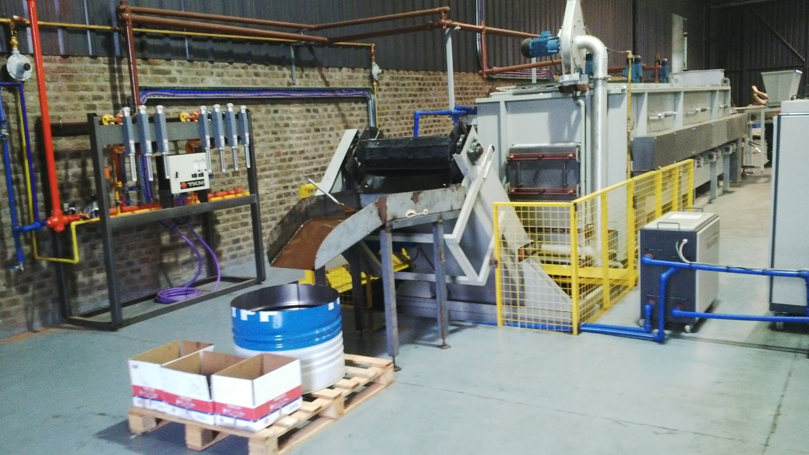
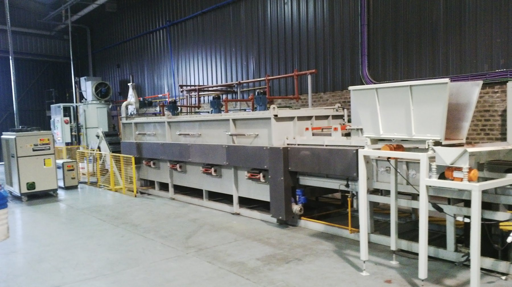

TPI Simulación 2026 · Grupo 10 · para la defensa presencial
¿Cuándo encender el horno?
Todo el trabajo en pocas páginas: el problema, los datos que conseguimos, cómo los usamos, los escenarios y cuánto le ahorra a la empresa.
−18 M$
La respuesta: si el horno se apaga apenas se queda sin tornillos para tratar, en lugar de esperarlo caliente hasta 48 horas, la fábrica se ahorra unos 18 millones de pesos por año (el 21,5 % de lo que cuesta operarlo). A cambio, el material espera en promedio poco más de un día extra.
1
El problema: un horno que cuesta prender

El horno de cementación y temple de la planta.

La línea completa, de cinta continua.
Una fábrica de tornillos de Santa Fe endurece las piezas en un horno de cementación y temple. Los tornillos llegan al horno en ULI: cajones de unos 140 kg. Cada ULI se vuelca en la cinta del horno, una por vez, cada 85 minutos.
El problema es que el horno cuesta prenderlo: tarda 36 horas en calentarse y 48 en enfriarse, y mientras está caliente gasta luz y gas aunque esté vacío.
Por eso no se prende por cada cajón: se espera a juntar unas 79 ULI y se hace una campaña. Si llega un pedido urgente, se prende antes. Cuando se vacía la cola, el encargado lo deja caliente hasta 48 horas "por si llega algo".
La pregunta de la empresa
¿Cuántas ULI conviene esperar antes de prender el horno? Esperar más reparte el costo de calentar entre más kilos, pero el material espera más.
Una campaña típica
Apagado
Acumulando ULI
Calentando 36 h
Procesando
Procesando
Caliente sin carga ≤ 48 h
Enfriando 48 h
2
La información que conseguimos (toda real)
| Qué | De dónde | Para qué la usamos |
|---|
| Cada ULI que pasó por el horno: fecha de lavado, fecha de horno y peso (11.353 ULI, 2024–2026) | Sistema de gestión de la empresa | Cuándo llegan las ULI, cuánto pesan, cuánto esperaron y cómo fueron las campañas reales |
| Facturas de luz del horno (28 meses; tiene medidor propio) | Empresa de energía | Cuántos kWh gasta por día caliente (≈ 2.400) y por cada encendido; precio del kWh (102 $) |
| Facturas de gas (GLP) y estadística de compras (2024–2026) | YPF Gas y la empresa | Cuánto gas gasta por día caliente (≈ 130 kg) y su precio (2.250 $/kg) |
| Lista de precios y costo del dinero (2 % mensual) | La empresa | Cuánto vale el material que espera en la cola (plata parada) |
| Entrevistas al encargado del horno | La planta | Los tiempos (36 h, 48 h, 85 min) y la regla real: 79 ULI, urgencias, carga mientras haya cola, caliente hasta 48 h |
Para decir
"No inventamos ningún número: los tiempos son del encargado, las llegadas y los pesos salen del registro de cada ULI, y los costos, de las facturas del propio horno."
3
Cómo usamos esa información
No repetimos "la película" del año real: eso sería una sola historia, y la conclusión dependería de la suerte de ese año. Con los datos armamos un generador de años posibles, parecidos al real pero distintos entre sí.
🎟️ Las semanas aleatorias
Tenemos 52 semanas reales de lavado. Es como una bolsa con 52 papelitos: cada lunes el modelo saca uno al azar, copia lo que llegó esa semana y lo devuelve a la bolsa.
⚖️ El peso
Cada ULI que llega sortea su peso entre los pesos reales del registro (en promedio, 141 kg).
🪙 Las urgencias
Cada ULI tiene una chance chica (0,54 %) de ser urgente, sacada de cuántas veces se prendió el horno antes de tiempo en la realidad.
Ejemplo ilustrativo de un papelito (una semana)
lunes0
martes9
miércoles0
jueves14
viernes3
Usando semanas enteras se conservan los días sin lavado (la mitad de los días hábiles), los picos y las semanas flojas, tal como pasan en la planta.
El horno no tiene azar: sigue los tiempos y la regla del encargado. Mientras corre, el modelo anota cuánto espera cada ULI y cuántas horas pasa el horno en cada estado, y lo pasa a pesos con las facturas.
4
Los cuatro escenarios (las reglas que probamos)
| Regla | Qué cambia |
|---|
| E0 | Regla actual | Se prende con 79 ULI (o una urgente) y queda caliente hasta 48 h si se vacía la cola. Es la base para comparar. |
| E1 | Umbral bajo | Se prende con 45 ULI: el material espera menos, pero se prende más veces. |
| E2 | Espera máxima | Se prende con 79 ULI o cuando la más vieja ya lleva 15 días esperando. |
| E3 | Apagar enseguida | Igual que E0, pero se apaga apenas se vacía la cola: no espera caliente. |
5
Las semillas, explicado fácil
Para sortear (qué semana sale, cuánto pesa cada ULI, si es urgente), la computadora usa una secuencia de números al azar. La semilla es el número con el que arranca ese sorteo.
Pensalo como mezclar un mazo de cartas siempre de la misma forma: con la semilla 7 salen siempre las mismas cartas en el mismo orden. Por eso la semilla 7 es siempre el mismo año: las mismas ULI, el mismo día, con el mismo peso.
Usamos 30 semillas (de la 1 a la 30): son 30 años distintos, todos creíbles.
El truco: los mismos 30 años para las cuatro reglas
A las cuatro reglas les tocan
los mismos 30 años. El año 7 con E0 y el año 7 con E3 reciben exactamente los mismos tornillos: lo único distinto es la regla. Entonces se comparan
año contra año, como gemelos:
año 7: E0 101,7 M$ E3 82,2 M$ → −19,5
año 8: E0 97,7 M$ E3 71,8 M$ → −26,0
... (30 años)
promedio: −18,0 M$ por año
Con las 30 diferencias se hace el
test de medias apareado: da que el ahorro está entre
16,2 y 19,8 M$ por año, y no incluye el cero. O sea,
el ahorro es real, no casualidad.
El recorrido completo: de 1 año real a 120 corridas
1. Datos reales. Las llegadas salen del último año (52 semanas de lavado, ago 2025 – ago 2026) y el peso, de esas mismas ULI. La chance de urgencia y la validación usan todo el registro 2024–2026 (11.353 ULI). Los costos, de las facturas.
2. Un año simulado. Cada lunes se sortea una semana real completa y se repite lo que llegó cada día (con reposición: una semana puede salir varias veces). Cada ULI sortea su hora (entre las 6 y las 22), su peso y si es urgente. Se descartan los primeros 90 días (el modelo arranca vacío) y se miden 365.
3. Las 120 corridas. Cada semilla es un año, y a ese mismo año se le aplican las cuatro reglas: 4 resultados por semilla. Después se compara dentro de cada año.
30 semillas (30 años) × 4 escenarios (E0, E1, E2, E3) = 120 corridas
año 7: E1 − E0, E2 − E0, E3 − E0
año 8: E1 − E0, E2 − E0, E3 − E0
...
→ 30 diferencias por alternativa → 3 tests de medias (E1, E2 y E3 contra E0)
Son 120 corridas, pero 30 años: los cuatro escenarios no viven años distintos, viven los mismos 30. La única diferencia entre E0 y E3 en el año 7 es la regla.
Y en la animación
La animación usa siempre la semilla 1: por eso cada vez que la corrés pasa exactamente lo mismo en las mismas fechas (la urgente llega siempre en la ULI 24). Es un solo año de ejemplo; los resultados salen de los 30.
6
Años buenos y años malos
Como cada semilla es un año distinto, hay años con mucho trabajo y años flojos. Eso es justamente lo que queremos capturar: la variabilidad.
1.277–2.249
ULI que llegan por año, según el año
62–102 M$
costo del horno por año con la regla actual
1–9
encendidos por urgencia por año (promedio 4,6)
5–9 días
espera media del material, según el año
Un año "malo": el de la animación
La semilla 1, la de la animación, tiene 9 encendidos por urgencia en su primer año: tantos como el peor de los 30 años del estudio (el promedio es 4,6). Por eso en la animación aparecen dos urgentes en las primeras dos semanas. No está mal: es un año con mala suerte.
Por qué importa
Si mirábamos un solo año, el resultado dependía de la suerte. Con 30 años vemos que E3 ahorra en los 30: entre 11,4 M$ el peor año y 26,0 M$ el mejor. Y que E1 y E2 salen más caros en 25 y 29 de los 30 años.
Para decir
"Simulamos 30 años distintos para que la conclusión no dependa de un año bueno o malo. Y el ahorro de apagar enseguida aparece en los 30."
7
El mejor escenario y lo que gana la empresa
| Contra la regla actual (por año) | Costo | Espera del material |
|---|
| E1 umbral 45 | +4,8 M$ más caro | 2,6 días menos |
| E2 espera máxima 15 días | +2,9 M$ más caro | 1,0 día menos |
| E3 apagar enseguida | −18,0 M$ más barato | 1,1 días más |
≈ 18 M$
ahorro por año (−21,5 % del costo); ≈ 1,5 M$ por mes
≈ 850 h
por año de horno caliente sin nada adentro que se eliminan (≈ 35 días)
≈ 82.500
kWh de luz menos por año
≈ 4.600 kg
de gas (GLP) menos por año
Recomendación
Mantener el umbral de 79 ULI y apagar el horno apenas se vacía la cola. Lo que más cuesta no es esperar más o menos cajones: es tener el horno caliente sin nada adentro (unos 22 mil pesos por hora de luz y gas). Bajar el umbral o poner una espera máxima hace esperar menos al material, pero cuesta más; solo convendría si entregar más rápido le hiciera ganar a la empresa más de 3 a 5 millones por año.
¿Y cómo sabemos que el modelo se parece al horno real?
Lo comparamos con el registro real del mismo año: reproduce las toneladas por mes, la duración de las campañas, la espera y el consumo de luz (4 de 6 medidas dentro de la tolerancia). Prende un poco más seguido que la realidad, igual en todas las reglas, así que no cambia la comparación.